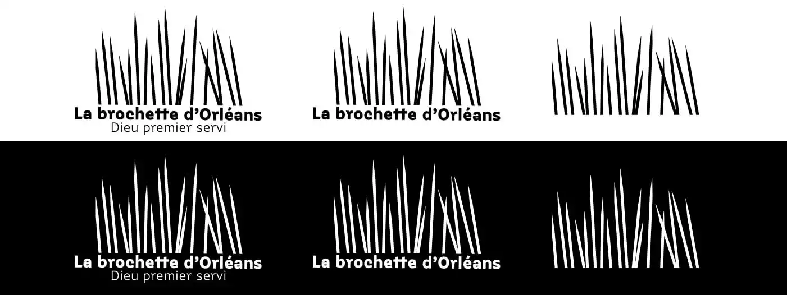
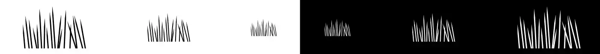
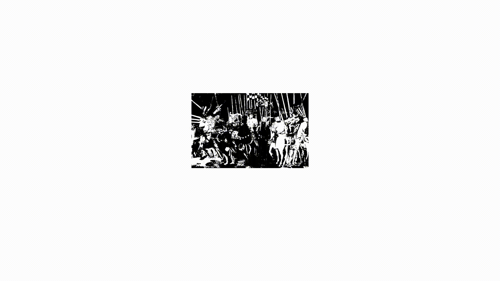
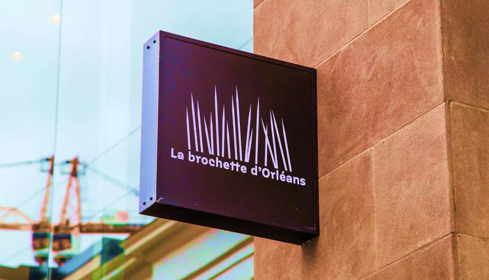
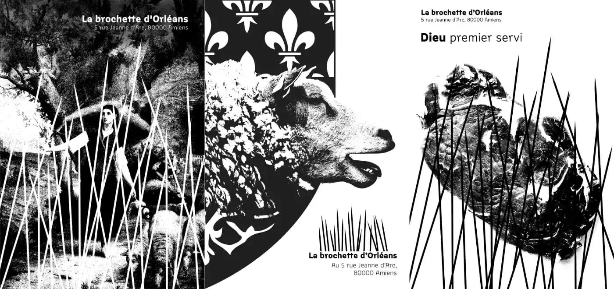
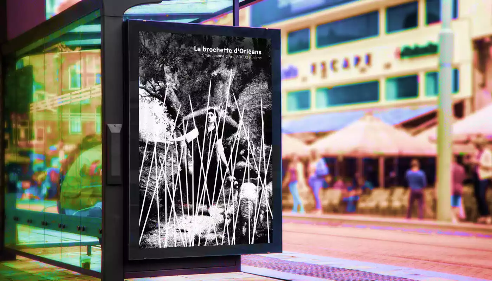
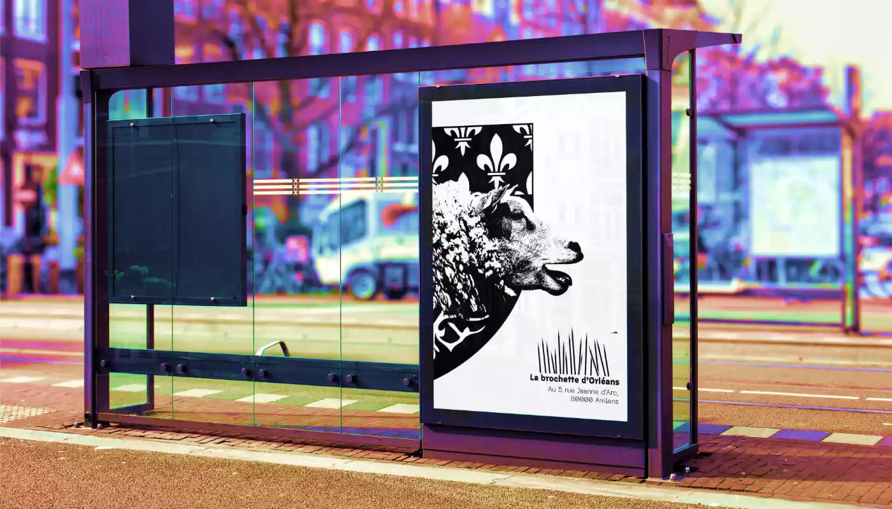
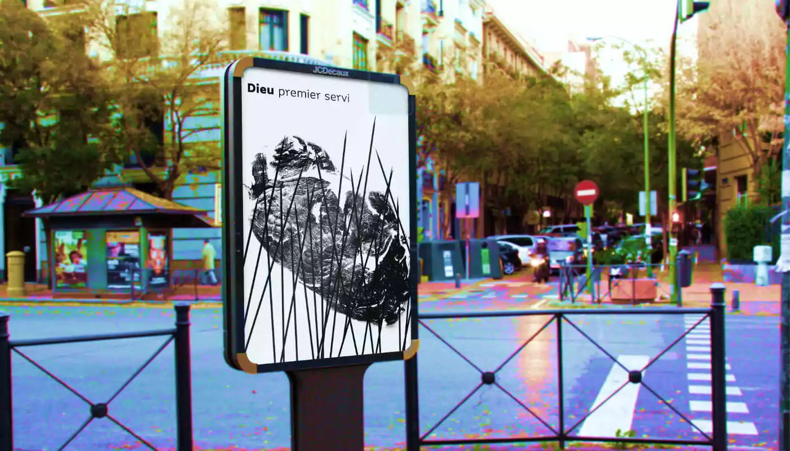
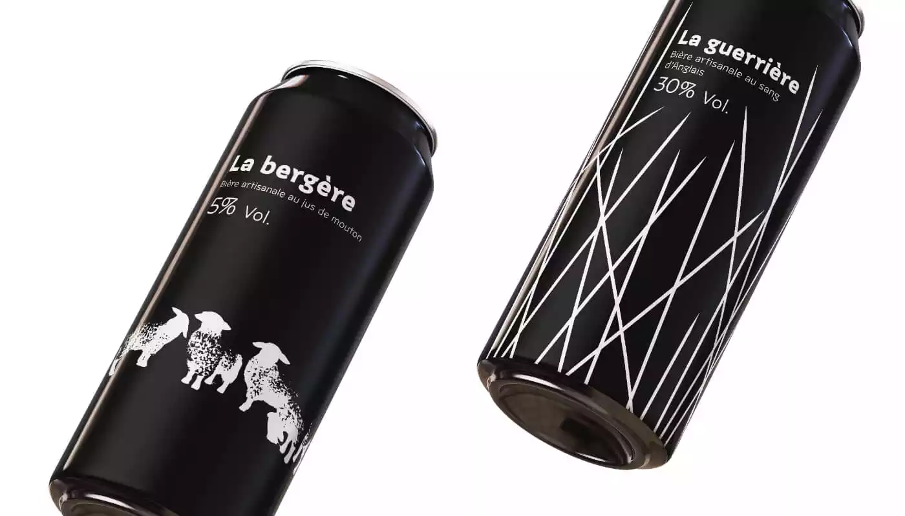

La brochette d’Orléans
Branding
La brochette d’Orléans est un restaurant de grillade imaginaire se situant dans la rue Jeanne d’Arc. Le but était de créer un restaurant imaginaire, en prennant en compte le nom de la rue choisie. Ici j’ai décidé de développer l'univers graphique du lieu dans l’histoire de Jeanne d’Arc.
Je me suis inspiré des tableaux de bataille de Paolo Uccello. J’ai repris les motifs de lances qui font penser à la guerre mais aussi à des brochettes brandies.
Ces brochettes-lances se retrouvent être le motif qui va lier tout le branding de la marque, avec aussi des références à cette univers de Jeanne d’Arc avec la devise «Dieu premier servi» ainsi que des tableaux, les boissons du restaurants qui portent le nom «La bergère» et «La guerrière».








